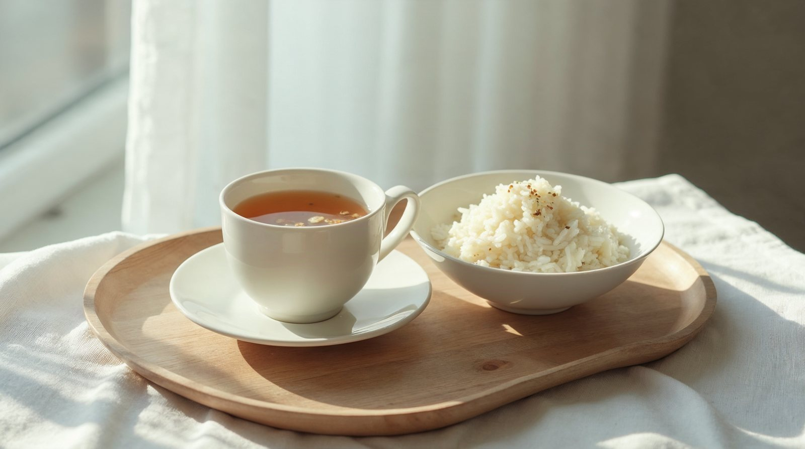
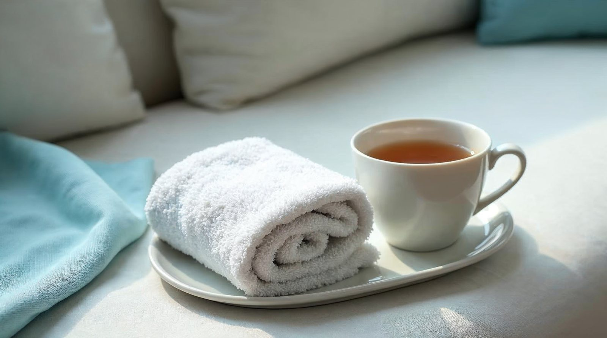
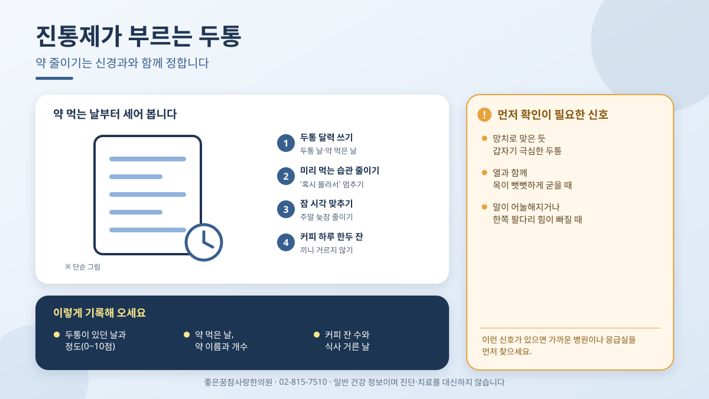

이종호 한의사 감수좋은꿈참사랑한의원 대표원장 (한의사 면허번호 19769)발행 2026-11-26 · 수정 2026-11-26
이 글의 차례
가방 안주머니에는 늘 진통제 한 줄이 들어 있습니다. 아침에 머리가 조금만 묵직해도 '오늘 중요한 회의가 있으니까' 하며 한 알을 먹습니다. 처음에는 한 달에 몇 번이던 것이 어느새 일주일에 서너 번이 되었습니다. 그런데 이상하게도 약을 먹는 날이 늘수록 두통 없는 날은 오히려 줄어들었습니다.
진료실에서 두통 이야기를 듣다가 "진통제는 한 달에 며칠쯤 드세요?"라고 여쭈면 잠시 머뭇거리시는 분이 많습니다. 세어 본 적이 없어서입니다. 달력을 함께 짚어 보면 생각보다 훨씬 많은 날에 약을 드셨다는 것을 알고 놀라시곤 합니다.
두통약을 너무 자주 먹으면 그 약이 오히려 두통을 부르는 상태가 될 수 있습니다. 이를 약물과용 두통이라고 부릅니다. 약을 먹은 사람의 잘못이 아니라, 아픈 것을 참지 않으려 애쓰다 생긴 일입니다. 그래서 탓하기보다 이해하는 것부터 시작하면 됩니다.
이 글에서는 약물과용 두통이 무엇인지, 왜 생기는지, 어떻게 알아차리는지, 그리고 신경과 진료와 함께 한의원에서는 무엇을 살피는지를 차근차근 정리했습니다.
약물과용 두통은 어떤 모습으로 나타나나요?
원래 편두통이나 긴장성 두통이 있던 분에게 잘 생깁니다. 두통이 있을 때마다 진통제를 먹다 보니 약을 먹는 날이 늘어나고, 그러면서 두통이 오는 날도 함께 늘어나 거의 매일 머리가 아픈 상태가 됩니다.
흔히 아침에 일어날 때부터 머리가 묵직하고, 약을 먹으면 잠깐 덜하다가 몇 시간 뒤 다시 아파 옵니다. 그래서 다시 약을 찾게 됩니다. 두통의 모양도 원래와 달라져, 편두통처럼 욱신거리던 것이 머리 전체가 띵하고 조이는 느낌으로 바뀌었다고 말씀하시기도 합니다.
일반적으로 한 달에 15일 넘게 두통이 있고, 진통제를 한 달에 10~15일 넘게 석 달 이상 먹어 왔다면 이 상태를 의심해 봅니다. 약의 종류에 따라 기준이 조금씩 다르니, 정확한 판단은 신경과에서 받으시는 것이 좋습니다.
왜 약을 먹을수록 두통이 잦아질까요
진통제는 아픈 신호를 잠시 누그러뜨립니다. 그런데 이런 약을 너무 자주 먹으면, 뇌에서 통증을 조절하는 체계가 약이 있는 상태에 익숙해집니다. 그러다 약 기운이 빠지면 통증에 더 예민해져서, 작은 자극에도 두통을 느끼기 쉬워진다고 설명합니다.
약 기운이 떨어질 때마다 두통이 오니, 다시 약을 먹게 됩니다. 이 고리가 반복되면 두통과 약이 서로를 부르는 상태가 됩니다. 두통이 올까 봐 미리 먹는 습관도 이 고리를 키웁니다. 아프지 않은데 '혹시 몰라서' 먹는 약이 쌓이기 때문입니다.
진통 성분이 섞인 감기약, 카페인이 함께 든 두통약, 커피를 많이 마시는 습관도 이 고리에 끼어들 수 있습니다. 카페인은 처음에는 두통을 덜어 주지만, 자주 마시다 끊기면 오히려 두통이 생기기도 합니다.
그래서 약물과용 두통은 약이 나빠서라기보다 약을 쓰는 '횟수'의 문제로 이해하시면 됩니다. 같은 약이라도 가끔 쓰면 좋은 도구가 되고, 너무 자주 쓰면 두통을 부르는 쪽으로 기울 수 있습니다.
다른 두통과는 무엇이 다른가요
긴장성 두통은 머리를 띠로 조이는 듯한 느낌이 주로 오후에 생기고, 목과 어깨가 굳을 때 심해집니다. 편두통은 머리 한쪽이 욱신거리며 빛과 소리가 싫어지고 속이 메스꺼운 발작이 옵니다. 이 두 가지가 원래의 두통인 경우가 많습니다.
약물과용 두통은 이런 원래의 두통 위에 얹혀서 생깁니다. 그래서 '원래 두통'과 '약이 만든 두통'이 함께 섞여 있는 경우가 많습니다. 진료실에서는 언제부터 두통이 잦아졌는지, 그 시기가 약을 자주 먹기 시작한 때와 겹치는지를 함께 짚어 봅니다.
두통의 모양이 갑자기 달라졌거나, 새로 시작된 두통이 점점 심해진다면 약 때문이라고 단정하기 전에 신경과에서 다른 원인을 먼저 확인하셔야 합니다. 그 확인이 있어야 약을 줄이는 계획도 안심하고 세울 수 있습니다.
약을 줄이는 일은 어떻게 하나요
약물과용 두통에서 가장 중요한 걸음은 진통제를 먹는 날을 줄이는 것입니다. 하지만 혼자서 갑자기 끊으면 처음 며칠은 두통이 더 심해지고 잠을 설치거나 속이 불편해질 수 있습니다. 그래서 이 과정은 신경과 선생님과 상의하며 계획을 세우시는 것이 좋습니다.
신경과에서는 줄일 약과 속도를 정하고, 필요하면 두통이 덜 자주 오도록 돕는 예방 약을 함께 상의합니다. 처방받은 예방 약이 있다면 정해진 대로 꾸준히 드시고, 혼자 멈추지 않으셔야 합니다.
약을 줄이는 처음 몇 주는 누구에게나 힘듭니다. 이 시기를 견딜 수 있도록 잠, 식사, 수분, 목과 어깨의 긴장을 함께 챙기는 것이 중요합니다. 한의원에서 함께할 수 있는 부분도 바로 여기에 있습니다.
진통제를 먹는 날 세어 보기
약물과용 두통을 알아차리는 첫걸음은 약 먹는 날을 세어 보는 것입니다. 달력에 두통이 있던 날은 동그라미, 약을 먹은 날은 체크 표시를 해 보세요. 한 달만 해 보아도 내 두통과 약의 관계가 한눈에 보입니다.
약을 줄이기 시작한 뒤에도 이 달력은 큰 힘이 됩니다. 처음 몇 주는 두통이 잦아 보이지만, 몇 달을 나란히 놓고 보면 동그라미와 체크의 수가 조금씩 줄어드는 흐름을 확인할 수 있습니다.
약국에서 약을 고를 때 알아 두면 좋은 것
약국에서 두통약을 살 때는 지금 드시는 다른 약과 두통약을 한 달에 며칠쯤 드시는지 약사에게 함께 말씀해 보세요. 성분이 겹치는 약을 모르고 함께 드시는 일을 줄일 수 있습니다. 감기약이나 생리통 약에도 진통 성분이 들어 있는 경우가 많습니다.
여러 성분이 한꺼번에 섞인 복합 진통제나 카페인이 함께 든 약은 편리하지만, 자주 드시면 약물과용 두통으로 기울기 쉬운 쪽으로 알려져 있습니다. 어떤 약을 고를지는 약사나 신경과 선생님과 상의하시는 것이 좋습니다.
집 안 곳곳에 진통제를 두지 않는 것도 작은 도움이 됩니다. 가방, 책상 서랍, 차 안마다 약이 있으면 손이 쉽게 갑니다. 약을 한 곳에만 두고, 꺼낼 때마다 달력에 표시하는 습관을 들여 보세요.

두통을 자주 부르는 생활의 고리
약을 자주 먹게 되는 바탕에는 두통을 쉽게 부르는 생활이 함께 있는 경우가 많습니다. 잠이 들쭉날쭉하고, 아침을 거르고, 하루 종일 화면 앞에서 고개를 숙이고, 커피로 버티는 하루가 이어지면 머리는 쉽게 아파 옵니다.
주말에 늦잠을 몰아 자는 것도 두통을 부르는 흔한 이유입니다. 평일보다 두세 시간 늦게 일어나면 리듬이 흔들리고, 평소 마시던 커피 시간도 늦어지면서 오전에 머리가 무거워지기 쉽습니다. 주말에도 평일과 한 시간 안쪽으로 맞춰 일어나 보세요.
마음의 긴장도 빠질 수 없습니다. 일이 몰리는 주, 사람 사이의 갈등, 쉬지 못하는 날이 이어지면 목과 어깨가 굳고 두통이 잦아집니다. 두통이 잦은 시기를 달력으로 되짚어 보면 생활의 무게가 무거웠던 때와 겹치는 경우가 많습니다.
먼저 이렇게 여쭙니다
처음 오시면 저는 대략 이런 순서로 여쭙니다. 미리 정리해 오시면 짧은 시간에도 많은 이야기를 나눌 수 있습니다.
- 원래 두통은 언제부터, 어떤 모양으로 있었나요?
- 지금은 한 달에 며칠쯤 머리가 아픈가요?
- 진통제는 어떤 약을, 한 달에 며칠쯤 드시나요?
- 아프기 전에 미리 먹는 경우가 있나요?
- 커피, 에너지 음료는 하루 몇 잔인가요?
- 잠든 시각과 깬 시각, 식사를 거르는 날은 어떤가요?
- 신경과 진료를 받아 보셨나요?
이 질문들에 답하다 보면 두통과 약, 생활이 어떻게 엮여 있는지가 조금씩 보입니다. 숫자를 정확히 기억하지 못하셔도 괜찮습니다. 오늘부터 세어 보시면 됩니다.
일상에서 먼저 해 볼 수 있는 것
약을 줄이는 계획은 신경과와 함께 세우시고, 그 과정을 버티게 해 주는 생활은 지금부터 챙겨 볼 수 있습니다. 아래 가운데 한두 가지를 골라 시작해 보세요.
- 두통 달력에 두통 있는 날과 약 먹은 날을 표시하기
- 아프지 않은데 '혹시 몰라서' 미리 먹는 습관부터 줄이기
- 잠드는 시각과 깨는 시각을 주말에도 비슷하게 맞추기
- 세끼를 거르지 않고, 물을 조금씩 자주 마시기
- 커피는 하루 한두 잔으로 정하고 오후에는 줄이기
- 50분 앉아 있으면 일어나 어깨와 목을 풀어 주기
두통이 올 때 바로 약을 찾기 전에, 조용한 곳에서 10분쯤 눈을 감고 쉬거나 뒷목에 따뜻한 수건을 얹어 보세요. 모든 두통이 그렇게 가라앉지는 않지만, 약 없이 지나간 경험이 한 번 두 번 쌓이면 약에 기대는 마음도 조금 느슨해질 수 있습니다.
몸을 움직이는 것도 도움이 됩니다. 하루 20~30분 가볍게 걷기처럼 꾸준한 움직임은 긴장을 풀고 잠을 돕는 데 좋습니다. 두통이 심한 날에는 무리하지 마시고, 괜찮은 날에 조금씩 이어 가세요.
한의원에서 함께 살필 수 있는 경우
- 진통제를 자주 먹게 되어 줄이고 싶은데 두통이 두려운 경우
- 신경과에서 약을 줄이는 계획을 세우고 그 과정을 함께 살피고 싶은 경우
- 목과 어깨가 늘 굳어 있고 오후마다 머리가 조이는 경우
- 잠이 얕고 긴장이 높아 두통이 쉽게 오는 경우
좋은꿈참사랑한의원에 오시면 먼저 아래 '먼저 확인이 필요한' 신호가 없는지부터 봅니다. 그다음 맥을 짚고 목과 어깨, 머리 옆 근육을 만져 굳은 자리를 찾습니다. 잠과 소화, 손발의 온도, 마음의 긴장도 함께 여쭙니다.
진찰한 내용을 바탕으로 침, 온열 관리, 추나, 한약 상담 가운데 지금 상태에 맞는 것을 정합니다. 한약은 드시는 두통약과 다른 약을 모두 확인한 뒤 신중하게 정합니다. 신경과에서 처방받은 약은 상의 없이 멈추지 않습니다.
약을 줄이는 처음 몇 주에는 진료 간격을 조금 촘촘하게 잡아, 그 사이의 두통과 잠, 긴장을 함께 살피는 경우가 많습니다. 힘든 날이 있었다면 그날의 기록을 들고 오셔서 편하게 말씀해 주세요.

약을 줄이는 처음 몇 주를 버티는 법
처음 몇 주는 두통이 잦게 느껴질 수 있습니다. 이 시기에는 중요한 약속을 너무 많이 잡지 마시고, 잠과 식사를 평소보다 더 규칙적으로 챙겨 주세요. 몸에 여유가 있어야 약 없이 지나가는 날을 조금씩 늘려 갈 수 있습니다.
가까운 사람에게 지금 약을 줄이는 중이라고 미리 말해 두는 것도 도움이 됩니다. 두통이 있는 날 이해받을 수 있고, 무심코 약을 권하는 일도 줄어듭니다. 직장에서도 꼭 필요한 사람에게만 짧게 알려 두면 마음이 한결 편해집니다.
힘든 날을 견뎌 낸 뒤에는 스스로를 칭찬해 주세요. 약 없이 지나간 하루는 작은 일이 아닙니다. 그런 날이 쌓이면서 두통과 약 사이의 고리가 조금씩 느슨해집니다.
이렇게 기록해 오시면 상담이 쉬워집니다
약물과용 두통은 기록이 곧 지도입니다. 한 달 정도 간단히 적어 보세요.
- 두통이 있던 날과 그 정도(0~10점)
- 약을 먹은 날, 약 이름과 개수
- 잠든 시각과 깬 시각
- 커피와 에너지 음료를 마신 잔 수
- 식사를 거른 날, 긴장했던 날 표시
한 달 기록을 함께 보면 약을 먹는 날이 어디에 몰려 있는지, 어떤 생활이 두통을 부르는지가 보입니다. 그 가운데 하나를 골라 바꿔 보는 것이 다음 걸음이 됩니다.
기록을 적다 보면 내가 생각보다 약을 많이 먹었다는 사실에 마음이 무거워질 수 있습니다. 그 마음은 잠시 내려놓으셔도 됩니다. 기록은 나를 탓하기 위한 것이 아니라, 앞으로 어디서부터 바꿀지 찾기 위한 지도입니다.
약과 다시 좋은 사이가 되기
진통제는 나쁜 약이 아닙니다. 너무 자주 쓰다 보니 도구가 짐이 되었을 뿐입니다. 약을 먹는 날을 줄이면 약은 다시 꼭 필요할 때 힘을 보태 주는 좋은 도구로 돌아올 수 있습니다.
이번 주에는 달력에 두통과 약을 표시하는 것 하나만 시작해 보세요. 다음에 오시면 그 달력을 함께 펼쳐 놓고, 신경과 계획과 함께 생활에서 무엇을 챙길지 같이 정해 보겠습니다.
이런 증상은 먼저 확인이 필요합니다
- 갑자기 머리를 망치로 맞은 듯 극심하게 시작한 두통이나 열, 목이 뻣뻣하게 굳는 증상이 함께 온 두통
- 두통과 함께 말이 어눌해지거나 한쪽 팔다리에 힘이 빠지고 물체가 둘로 보이는 경우
이런 신호가 있으면 한의원보다 가까운 병원이나 응급실을 먼저 찾으세요.
함께 읽으면 좋은 글
- 한쪽 머리가 욱신거리는 편두통은 생활에서 무엇을 기록하나요?
- 스트레스를 받으면 뒷목이 당기고 머리가 아픈 긴장성 두통은 어떻게 살피나요?
- 잠을 못 자면 두통이 올 때는 어떻게 살피나요?
- 한의원 가기 전에 복용 약 목록은 어떻게 정리하면 좋나요?
- 한쪽 눈 뒤가 찌르듯 아파 밤마다 같은 시각에 깨는 군발두통은 어떻게 살피나요?

여쭙는 것
- 원래 두통은 언제부터, 어떤 모양으로 있었나요?
- 지금은 한 달에 며칠쯤 머리가 아픈가요?
- 진통제는 어떤 약을, 한 달에 며칠쯤 드시나요?
생활에서 해 볼 것
- 두통 달력에 두통 있는 날과 약 먹은 날을 표시하기
- 아프지 않은데 '혹시 몰라서' 미리 먹는 습관부터 줄이기
- 잠드는 시각과 깨는 시각을 주말에도 비슷하게 맞추기
한의원에서 함께 살필 것
- 진통제를 자주 먹게 되어 줄이고 싶은데 두통이 두려운 경우
- 신경과에서 약을 줄이는 계획을 세우고 그 과정을 함께 살피고 싶은 경우
- 목과 어깨가 늘 굳어 있고 오후마다 머리가 조이는 경우
먼저 확인이 필요한 신호
- 갑자기 머리를 망치로 맞은 듯 극심하게 시작한 두통이나 열, 목이 뻣뻣하게 굳는 증…
- 두통과 함께 말이 어눌해지거나 한쪽 팔다리에 힘이 빠지고 물체가 둘로 보이는 경우
한눈에 보는 표
| 구분 | 핵심 |
|---|---|
| 여쭙는 것 | 원래 두통은 언제부터, 어떤 모양으로 있었나요? 지금은 한 달에 며칠쯤 머리가 아픈가요? |
| 생활에서 해 볼 것 | 두통 달력에 두통 있는 날과 약 먹은 날을 표시하기 아프지 않은데 '혹시 몰라서' 미리 먹는 습관부터 줄이기 |
| 한의원에서 함께 살필 것 | 진통제를 자주 먹게 되어 줄이고 싶은데 두통이 두려운 경우 신경과에서 약을 줄이는 계획을 세우고 그 과정을 함께 살피고 싶은 경우 |
| 먼저 확인이 필요한 신호 | 갑자기 머리를 망치로 맞은 듯 극심하게 시작한 두통이나 열, 목이 뻣뻣하게 굳는 증상이 함께 온 두통 두통과 함께 말이 어눌해지거나 한쪽 팔다리에 힘이 빠지고 물체가 둘로 보이는 경우 |
자주 묻는 질문
두통약을 한 달에 며칠 먹으면 많은 건가요?
약의 종류에 따라 다르지만, 한 달에 10~15일 넘게 석 달 이상 드셨다면 약물과용 두통을 생각해 봅니다. 정확한 판단은 신경과에서 받으시고, 먼저 달력에 약 먹은 날을 세어 보세요.
오늘부터 진통제를 딱 끊으면 되나요?
혼자 갑자기 끊으면 처음 며칠은 두통이 더 심해질 수 있습니다. 줄이는 약과 속도는 신경과 선생님과 상의해서 정하시고, 그 과정에서 잠과 긴장을 함께 챙기는 것이 좋습니다.
한약으로 진통제를 대신할 수 있나요?
진통제를 대신한다고 말씀드리기는 어렵습니다. 진찰 뒤 지금 몸 상태에 맞춰 침이나 한약 상담을 정하고, 드시는 약을 모두 확인한 뒤 신중하게 함께 이어 갑니다.
커피도 두통과 관련이 있나요?
카페인은 처음에는 두통을 덜어 주기도 하지만 자주 마시다 끊기면 두통이 생기기도 합니다. 하루 잔 수를 정해 두고 기록과 함께 변화를 살펴보세요.
약을 줄이는 동안 두통이 오면 어떻게 하나요?
신경과에서 정해 준 계획을 따르시고, 조용한 곳에서 쉬거나 뒷목을 따뜻하게 하는 방법을 함께 써 보세요. 힘들었던 날은 기록해 두었다가 진료 때 말씀해 주시면 함께 살핍니다.
좋은꿈참사랑한의원은 재진 때 지난번 이야기부터 이어서 여쭙니다. 진료시간과 예약은 오시는 길에서 확인하세요.
어디서 상담받을 수 있나요?
좋은꿈참사랑한의원은 서울 동작구 만양로2길 2 신성빌딩 3층·5층(서울 동작구 상도동, 7호선 상도역 3번 출구 근처)에 있습니다. 한의사 3명(이종호 대표원장, 조영기 수석진료원장, 정원영 진료원장)이 진료합니다. 진료시간은 평일 09:30~20:00(점심 13:00~14:00), 토·일·공휴일 09:30~15:00이며, 방문 전 전화로 확인을 권합니다. 예약은 네이버 예약, 카카오톡 상담, 전화 02-815-7510로 받습니다.
이 글은 일반적인 건강 정보이며 개인의 진단이나 치료를 대신하지 않습니다. 증상이 있거나 복용 중인 약이 있다면 진료를 통해 확인하세요. 치료 효과는 개인마다 다를 수 있습니다.
작성 기준: 일반적으로 알려져 있는 건강 정보를 참고해 정리했습니다(대표원장 감수). 증상 기록은 1~2주 동안 하루 1회, 비슷한 시간에 적어 오시면 지난 상태와 비교하기 쉽습니다.